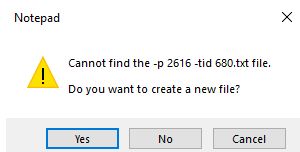

Step 1: Get-AppxPackage | gl name,packagefullname #identify full app name/version
Step 2: Modify necessary registry keys
Using your own binary:
If you are planning on running a “custom” executable, it must be able to handle the input the application sends in. If you set the debug application to notepad you can see what it sends into the application:

So, basically -P <number> and -tid <number> will be sent to the “debugger”.